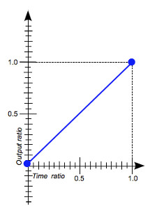
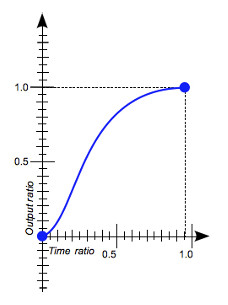
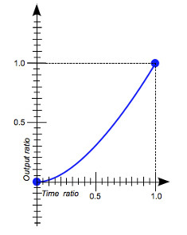
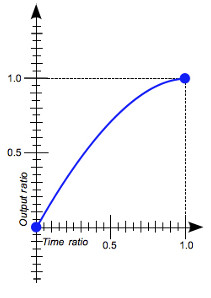
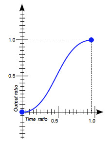

позволяют задать плавный переход CSS-свойствам, т. е. значения свойств изменяются постепенно в течении определенного (заданного) промежутка вермени
задает длительность эффекта перехода
selector{
transition-duration: 1s; /* Длительность перехода */
}
transition-duration: <параметры>
— <время> [,<время>]* — задается в "s" или "ms"
задает задержку перед запуском эффекта перехода
selector{
transition-delay: 1s; /* Задержка перед запуском */
transition-duration: 2s;
}
transition-delay: <параметры>
— <время> [,<время>]* — задается в "s" или "ms"
определяет свойства, к которым будет применен эффект перехода
selector{
transition-property: all; /* По умолчанию all */
transition-duration: 1s;
}
transition-property: <параметры>
— none — эффект перехода не будет применен
— all — эффект перехода применится ко всем доступным свойствам
<свойство> [,<свойство>]* — указывается одно или несколько свойств, к
которым применится эффект перехода
определяет скорость и ускорение изменения значений свойств во время эффекта перехода
selector{
transition-timing-function: ease;
transition-duration: 1s;
}
transition-timing-function: <параметры>
— linear — скорость перехода одинаковая от начала и до конца

cubic-bezier(0.0, 0.0, 1.0, 1.0)
transition-timing-function: <параметры>
— ease — начинается медленно, далее ускорение и к концу замедление

cubic-bezier(0.25, 0.1, 0.25, 1.0)
transition-timing-function: <параметры>
— ease-in — начинается медленно, к концу ускорение

cubic-bezier(0.42, 0.0, 1.0, 1.0)
transition-timing-function: <параметры>
— ease-out — начинается быстро, к концу замедление

cubic-bezier(0.0, 0.0, 0.58, 1.0)
transition-timing-function: <параметры>
— ease-in-out — начинается и заканчивается медленно

cubic-bezier(0.42, 0.0, 0.58, 1.0)
— cubic-bezier.com — сервис, предоставляющий возможность быстро сгенерировать кривую Безье
— easings.net — коллекция разных easing-функций на основе кривых Безье
selector{
transition: all 1s linear .25s;
}
transition: <параметры>
— none — отменяет переход
— порядок записи свойств:
1.transition-property
2.transition-duration
3.transition-timing-function
4.transition-delay